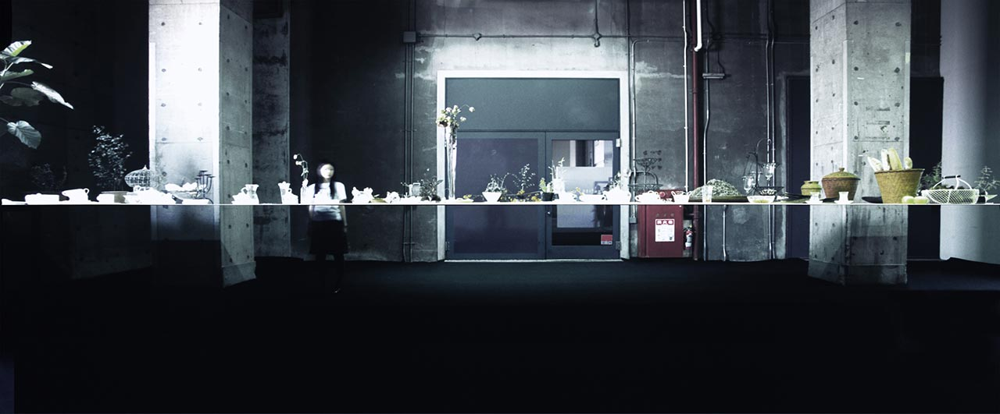
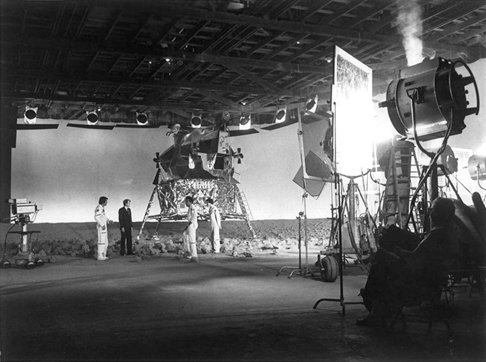
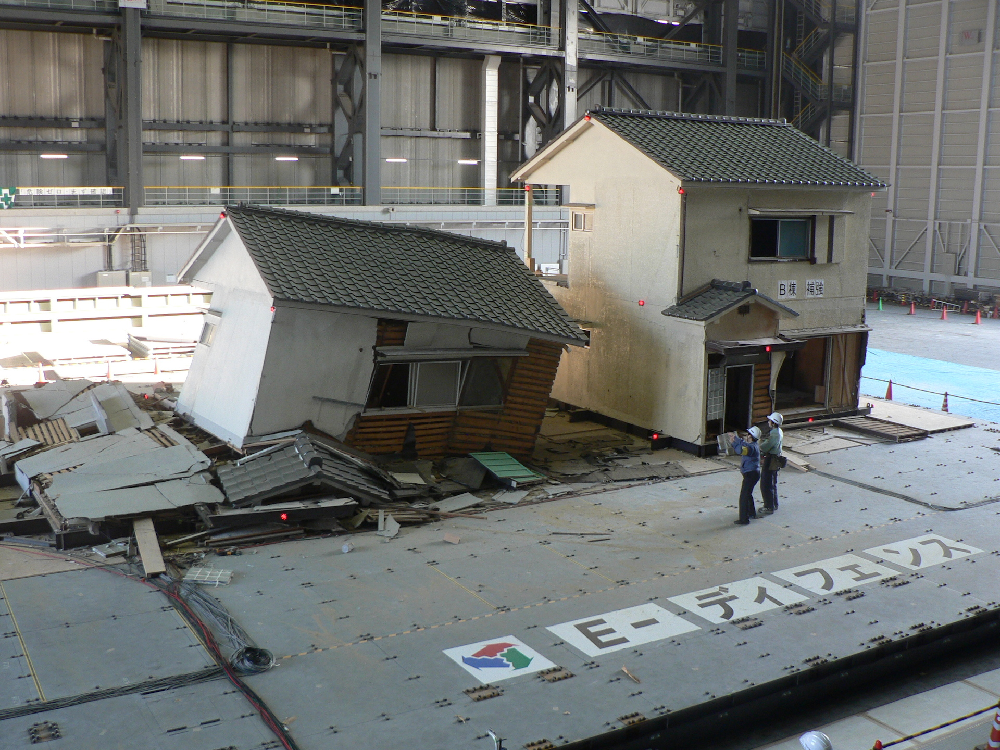
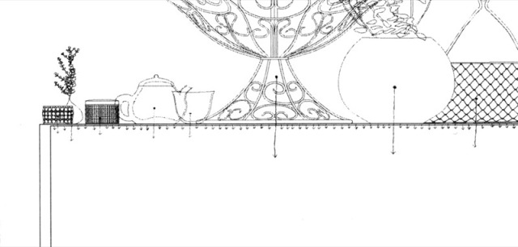

Structural construction vs. image construction

Within proximity to neuroscience and human anthography, magicians were the first to succeed in reverse engineering consciousness to choreograph cognitive illusions. Perceived concrete rationality were now danced among. The challenged rational reality was what attracted men to be lured in by the effortless and playful performance. In the 1920s technological innovation in film, the transmissions lead to the kickstart of our economic globalisation history. The trick was simple - amusement sells. The impossibly thin table engineers the gravitational pull versus the tension of the bent steel. Junya Ishigami’s work is driven to create an optically impossible mono-material structure. The tension of the structural integrity is deliberately concealed and is intangible by the naked eye. In which the inhabitable spaces are the by-product of the carefully engineered and delicate structures.

‘The moon hoax’ is a popular American conspiracy theory that attempts to debunk the moon landing with alleged flaws in the cinematography of the Apollo program in 1969. This theory can be quickly discredited by the 60s inadequate special visual effects in cinematography. The landing telecasts would have been impossible to replicate with the primitive technology profiles of the time of the moon landing. (Collins, 2013)
A tremendous amount of engineering was put into the aerospace rocketry and guidance systems. The same effect comparatively could have been easily staged in a television studio today. The mega-scale structure and the corresponding machines were the monumental symbols of global power between the United States and Russia. The resemblance in creating a cinematographic view verses the lengthiness of premeasures put into the engineering production in the Apollo program and Ishigami’s domestic project; the Table; are uncanny. Ishigami forces complexities in the creation of household furniture. The Impossibly Thin Table is plausibly an overly rational thinking process reverses into the creation of an image of an irrational and overlooked domestic object. (Lucarelli, 2016)
Political anxiety and the image-making
New and vast approaches in phenomenology in the 1950s was perhaps a reaction to the race to the moon. A flaunting gesture of colonisation of US territory in what was foreseen to be the unapproachable divine realm settled the space race. The picture-perfect propaganda campaign that painted the American dream to mask the Cold War anxiety was produced with manicured lawn and shiny electronic kitchen appliances. (Colomina, 2007) Which echoed the United States’ national ethos that believes in social mobility and freedom tries to cloak the inherent decreased national security. (Thomas, 2020)
Architecture Ideologies are influenced by national boundaries and present political context. Japan’s on-going unique geopolitical anxiety. Due to frequent interruption in Japanese tectonic plates solidified Japan’s seismic engineering to be strictly earthquake resistant. “[The structures] bend like willow to avoid building up stress” (Koshihara) The Japanese built structure manufactures stress on the malleability and resistance to collusion for their safety and practicality. Graded resistance is essential in Japanese architecture, unlike the land, most of us inhabit on.

Civilised nations each have their political desires and apprehensions. Often the beautifully made images are a collective effort to deceive their national nervousness. Behind Japan’s ambition for finesses and delicacy, are the multi-generational fear of the unrestrained divine geographical conditions that mankind simply cannot control.
Tensegrities system
Tensional integrity or the floating compression are often used to create visual effects of an ‘anti-gravitational’ structure. The system is a network of tensile forces and compression forces that are usually disjointed. Although it is controversial, the human body is arguably the first mechanism that uses the principles of the tensegrities system. In our musculoskeletal system. Our bodies' structural integrity and momentums are stabilised with tendons. Motions are created by the compression in discontinuous skeleton members that use tensile forces from the ligaments. (Judge, 1978)

The Table takes advantage of the invisible forces as it’s structural strategy. The gravitational force from the objects compresses the steel surface. While the support system is stabilised by the tensile forces by the shape-memory alloy of the bent steel sheet (9.5m x 2.6m x 1.1m). The rippling impetus is abled by the fluid and flexible nature of the tensional principle creating a structurally sound system that seemingly is impossible.
On the Table are the objects that are compositionally orchestrated for their application as ‘islands’ “[laid out] as collective imagery and displayed as a celebration of autonomy”. (Vittorio,2008) The density, size, and weight of the objects in the span complete the cometographical quality of the domestic object. “The immateriality of the object is enhanced by the gentle ripples that the surface produces when touched.” (Lucarelli, 2016) Proposing the new architectural structure in which the depth of the project is enhanced with the activation of material feedback via a simple ritual or an everyday gesture of touching a table, creating a new possibility of architectural space. (Ishigami, 2012)
A frequently discussed architectural philosophy is the association of destruction and the re-built environment. A legacy of World War II was the major building program in the scales of the factories, cities, and the national. In which those mass-built infrastructures simulated growth in the American economy. (Albrecht, 1995) Manufactures used for producing war weaponry in World War II rehabilitated into domestic technology, aligning with the modernistic architectural ambitions; The American dream. The national ethos believing in social mobility. Reformed means of living were evoked by the alternative gestures of the existing wartime technology.
The agenda of the re-fabrication of wartime technology put into domestic production promoted the possibilities of creating ‘new’ rituals. Affirming practices and ideologies of the modernistic architects. The studies of anthropometric scale “[to what] would reconcile the need of the human body with the beauty inherent in the Golden Section”. (Le Corbusier, 1948) Embarked the refined design in adaptable scales of the man. The beauty in proportion, the renaissance of the golden ratio found in the body applied in architectural designs perhaps were the ambitions to shape-shift the architectural planning of the living.
Ishigami’s design has a similar ambition for the ‘freeness in architecture’ in the context of the current contemporary as “something that has never existed before”. (Ishigami, 2015) The architect plays with the scale of the surface and the scale of the legs to perform deceptive illusions. The domestic object in a scale for numerous bodies to interact in the same given time and space. The Table is manufactured by machinery for an industrial-scale object. “There is no real future if we contemplate architecture while limiting ourselves to a set of standards, uniform values. I think we will have to assume many values if we want to present new conditions for architecture…” (Ishigami, 2015)
From monuments to down-sized projects, reinforced concrete, and modular construction methodologies - the contemporary challenges the modernistic paradigm of phenomenologies. “[The current] era [is] instilled with possibilities that do not bind us to any given style and instead of allows us to consider the issue of architecture in its fundamentals and the possibility of creating architecture that is fundamental” (Ishigami, 2015) made feasible with the present’s lavish technicality.
The shift in the industrial rituals with the economic globalisation capacitates abuse of a geological location of the cost of man labour for greater economic benefits. Thus, impacting on the scale and the distribution of architecture in global and local settings. The cost of labour can be cut short with exponential growth in the automation industry and mass volunteer workers due to a shortage of work triggered by the unequal distribution of employment in the current societal models. (Jonze, 2019) Junya Ishigami was involved in multiple controversies of abusing unpaid internships. Junya Ishigami + Associates’ internship program demands 72 working hours per week for 8 to 12 weeks. In an incident, the commissioning UK architects condemned the unethically sourced work and ordered ‘all workers to be paid’. (Wilson, 2019) While noting the amusement and the delicacy of Ishigami’s work come from the greatly detailed engineered delicacy, it raises the question of culture and industry ethics.
The current paradigm offers infinite possibilities of exploration within the practices of architecture. Today’s abundance of available information and technology makes the day and age we live in an unprecedented time. This was made possible with the accelerated development in the electronics in World War II, due to focused expansion in aero craft systems in the Moon Race, and the exponential growth in the digital field presented today. The cinematographic visual post productions are now omnipotence. The vast availability of information may or may not deceive us.